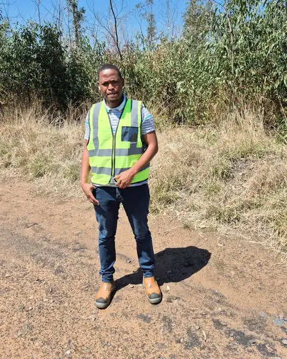

2025–now
Johannesburg
Systems engineer, Engineer-in-Training
Transnet SOC Ltd, Rail Infrastructure Manager
- Replaced manually compiled spreadsheets with full-stack monitoring dashboards that give the Technical Office and corridor depots a single live view of rail operations, saving roughly a week of manual work each month.
- Built automated Python/REST services for data collection, vehicle identification and compliance reporting, removing repetitive manual logging from daily engineering work.
- Run technical reviews, field testing and commissioning of Condition Assessment Systems (CAS), and support derailment investigations with documented analysis and configuration management.
-
Rail Monitor
One live view of equipment availability across points, signals, TVDS, power and remote control. Availability is scored with a weighting per equipment type, using SAP, GPS and manual operator input that is checked weekly with the Technical Office. I designed and built it, including the back-end logic for substation breaker and switching states. Phase 1 tracks status per station; phase 2, which I presented to stakeholders, moves to individual assets.
React, TypeScript, Django, PostgreSQL, WebSocket
Full notes
Problem statement. Need to view substation availability in a consolidated and current view for efficient monitoring of railway infrastructure.
Project involvement
- Back-end logic development for substation breaker logic implementation
- Front-end development of substation availability visualisation
- Integration of switching logic information
-
Train movement graph optimisation
An internal rail monitoring system showed every CTC section in one undifferentiated view, which made per-section analysis impractical, and there was no historical movement data for trend analysis. I rewrote the sequencing logic so each section gets its own graph, and added a historical archive beside the real-time database, a caching layer, a background export worker and a historical overlay for comparing past and live movements.
PHP, PostgreSQL, Highcharts
Full notes
Project involvement
- Reviewed and understood the existing sequencing logic in the legacy codebase
- Rewrote the logic to support segmented, per-section graph views
- Designed and integrated a dual-database architecture (real-time + historical archive)
- Implemented an intelligent caching layer to reduce database load
- Built a background processing worker for export functionality without blocking the UI
- Developed a historical data overlay for side-by-side comparison with live data
Key challenges
- Processing large date ranges without memory exhaustion (chunked approach)
- Isolating real-time and historical queries without degrading performance
-
Trunking highsite dashboard
The Network Operations Centre watched faults across several separate screens, and scheduled ingestion scripts were failing silently on some machines, so the data went stale. I built one consolidated view with long-outstanding fault tracking, asset visualisation and availability monitoring, traced the ingestion failures, and moved data collection onto background services so the feed stays current.
React, Python, PostgreSQL, Windows services
Full notes
Project involvement
- Software development for a consolidated dashboard view and long outstanding fault tracking
- Asset visualisation across the railway network and infrastructure availability monitoring
- Investigated and resolved data ingestion failures, gaining hands-on understanding of how system architecture, OS environments, and service dependencies interact
- Deployed background data services to ensure continuous, reliable data flow to the dashboard
NOC and field teams now monitor faults, subscribers and billing activity from a single interface in real time.
-
CAS availability dashboard
Rebuilding the CAS dashboard by scraping data out of the legacy system into PostgreSQL. I’m now moving new development into production as one system rather than table by table, with a per-table impact list of what actually changes and a test for each migration.
PostgreSQL, PHP, data pipelines, legacy migration
Full notes
Project involvement
- Dashboard redesign and modernisation with data scraping from legacy CAS system
- PostgreSQL database integration and data pipeline development
-
VIS Master
Monitors the health and communication status of Vehicle Identification Systems across the railway network. I built the system health monitoring, the communication diagnostics and the status tracking for VIS infrastructure.
-
RailBAM calibration
RailBAM gives early, automated detection of bearing and wheel defects on passing trains using high-frequency acoustic monitoring, covering running surface (RS), looseness/fretting (LF) and wheel flat (WHLFLT) faults. It needs periodic calibration to stay accurate. I took part in calibrating the trackside acoustic cabinets and wayside hut hardware, configured speaker set-up points and sensitivity thresholds, and confirmed sensor performance in the trending database afterwards.
RailBAM Wayside Software, Process Monitor, acoustic sensor calibration
Full notes
Project involvement
- Participated in physical calibration of trackside acoustic cabinets and wayside hut hardware
- Configured speaker set-up points and adjusted acoustic sensitivity thresholds
- Used RailBAM Wayside Software for data acquisition, analysis, and calibration validation
- Worked with Process Monitor for session control and fault handling during calibration
- Observed RailBAM Trending Database output to confirm correct sensor performance post-calibration
Key challenges
- Detecting faint acoustic fault signatures in a high-noise trackside environment
- Synchronising acoustic, speed, and tag data for accurate fault classification
- Handling harsh environmental conditions during outdoor calibration work

On a site visit. -
Offline ML platform for train movement data
I designed a fully offline, CPU-only machine-learning platform for train movement data: delay prediction with LightGBM, demand forecasting with Prophet and an LSTM, schedule optimisation with OR-Tools CP-SAT, anomaly detection with an Isolation Forest and an autoencoder, real-time position prediction with a Kalman filter and XGBoost, and asset lifecycle tracking with lifelines and SQLite.
FastAPI, Streamlit, MLflow, DuckDB
-
R&D engineering change and procurement
I own R&D engineering change proposals (ECPs) and the procurement workflows that follow them, end to end across departments, from technical motivation through to award.